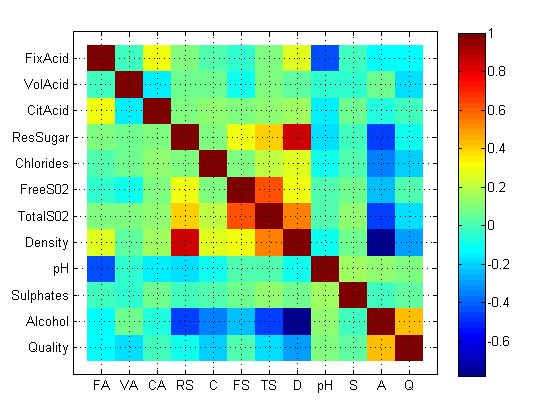

Using Sequential Feature Selection
The white wine data set consists of 5000 different White Wines produced in Portugal. We’re going to build a model that will predict wine quality based on chemical composition, and then simplify that model to see which variables are actually important.
Contents
Clean up and set random number generator
Many of the techniques that we're using make use of random sampling. Setting the random number generation will allow us to reproduce these results precisely.
clear all
clc
rng(2010);
Import our data
White_Wine = dataset('xlsfile', 'White_Wine.xlsx'); X = double(White_Wine(:,1:11)); Y = double(White_Wine(:,12));
Covariance Matrix
covmat = corrcoef(double(White_Wine)); figure x = size(White_Wine, 2); imagesc(covmat); set(gca,'XTick',1:x); set(gca,'YTick',1:x); set(gca,'XTickLabel',shortlabels(White_Wine.Properties.VarNames)); set(gca,'YTickLabel',White_Wine.Properties.VarNames); axis([0 x+1 0 x+1]); grid; colorbar;
Use sequential feature selection to identify significant variables
tic % Create a cvpartition object that defined the folds c2 = cvpartition(Y,'k',10); % Set options opts = statset('display','iter', 'useparallel', 'always'); % Opening up a MATLAB pool to run in parallel matlabpool open 2 fun = @(Xtrain,Ytrain,Xtest,Ytest)... sum(Ytest~=predict(NaiveBayes.fit(Xtrain,Ytrain,'Distribution','kernel'),Xtest)); [fs,history] = sequentialfs(fun,X,Y,'cv',c2,'options',opts); toc; % Closing the MATLAB pool matlabpool close
Warning: One or more folds do not contain points from all the groups. Warning: Found 1 pre-existing parallel job(s) created by matlabpool that are running. You can use 'matlabpool close force local' or create a configuration for the distcomp.localscheduler object and use 'matlabpool close force <configurationName>' to remove all jobs created by matlabpool. Starting matlabpool using the 'local' configuration ... connected to 2 labs. Start forward sequential feature selection: Initial columns included: none Columns that can not be included: none Step 1, added column 11, criterion value 0.501837 Step 2, added column 2, criterion value 0.473254 Step 3, added column 1, criterion value 0.467334 Step 4, added column 6, criterion value 0.464679 Final columns included: 1 2 6 11 Elapsed time is 83.687186 seconds. Sending a stop signal to all the labs ... stopped.
Display signifcant variables
White_Wine.Properties.VarNames(fs)
ans =
'FixAcid' 'VolAcid' 'FreeS02' 'Alcohol'